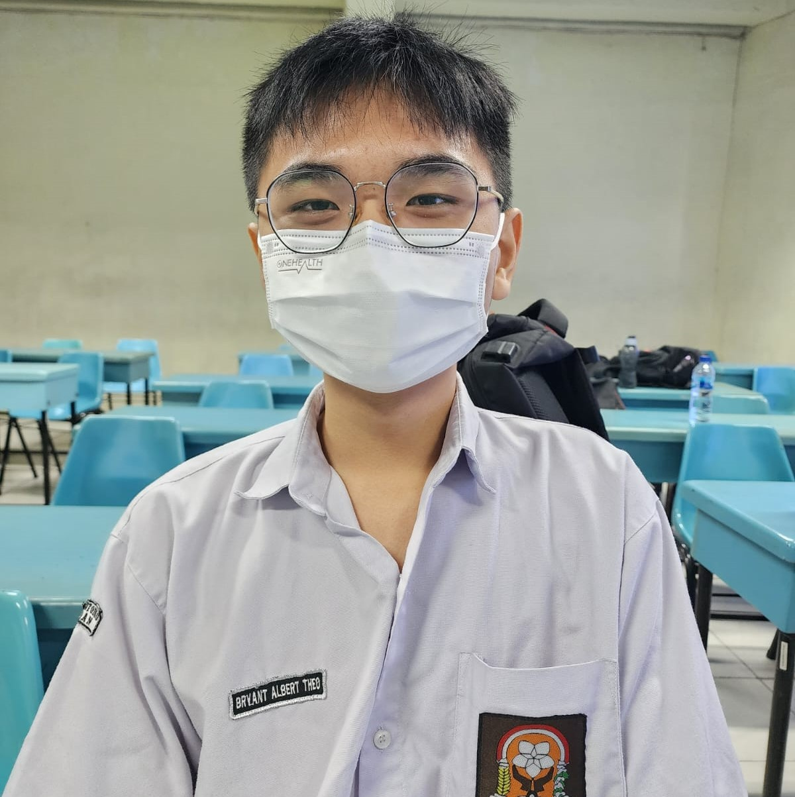

Meet our friend, Bryant
He was one of the best students in our class.
His favorite subject was physics, and he was good at mafia.
He was a great friend, an excellent mind, a passionate learner, and a caring person.
He came from a broken home familly, but always show compassion and smile everyday.
Unbeknowned to us, even the brighthest light will always have shadow.
He got sick more frequently, got dissappointed for not being choosen in OSK.
Some students notice his unusual behaviour, but keep it to themself.
Then,...
Something unexpected happened...
We got news that he fell down the stair and hit his head
After that, he never show up to school anymore...
30 May 2024, he left us behind.
This news is heartbreaking to all of us, and it saddened me to see his suffering from this unfortune. It reminds us of how short and fragile one's life is. We never know what will happen tomorrow, or even in a few minutes ahead. It's normal to feel sorrow and sadness over our beloved friend's funeral. But, let's not be discouraged by this and makes it a reminder for all of us to live a good life. Bryant had done his best up to the very end, and I am sure that his story is one of the story we won't forget.
Memories of BAT